Birdie Blooms · Logo directions
What she likes, and four ways to be Birdie Blooms
Her eighteen favourites fall into four families. Each direction below takes one family and makes it hers, with its own typeface, mark, colours and uses. Every font is free to use commercially (Google Fonts, Open Font License), and every logo is a clean vector file.
Soft-focus classic
Refined roman capitals, sometimes with one romantic swash letter, set in cream over blurry, grainy flower photos.
BLUME, The Plot, Bloom Bar, AESTÉ
Hand-drawn garden
Pen-and-ink birds and flowers, handwriting and little wreaths, in olive, ochre and pink.
the bird drawing, faeblette, Quiet Wild, Olive’s Garden
Seventies bloom
Soft, chunky, groovy letters, a daisy for a mark, and happy pinks, berries and oranges.
her own logo, Bloom Baby, Beyond Buds, Flower Market
Vintage flourish
Swirling scripts, engraved ovals and frames, and woodcut flowers in olive, chartreuse and claret.
Wildora, the violet oval, Le Petit Atelier, La Fleur Verte, Sunlit Studio, the Acne scarf
01
Soft Focus
Roman capitals with a single swash B. Quiet, grown-up and luxurious, made to sit over soft, dreamy photographs of her flowers.
From her picksBLUME · Bloom Bar · The Plot · AESTÉ

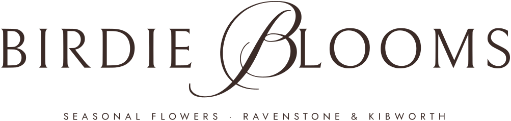
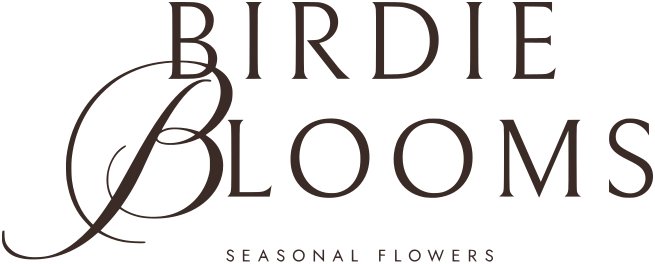
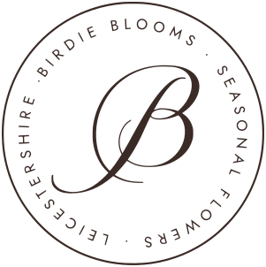
Classic and calm. The swash B gives it one moment of romance, so it never feels cold.
02
Garden Notebook
A little wren on a cosmos stem, drawn in pen, with her name in handwriting. Warm and personal, like a note tucked into a bouquet.
From her picksHannah’s bird drawing · faeblette · Olive’s Garden · Quiet Wild

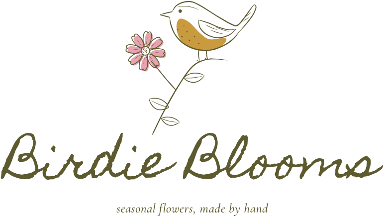
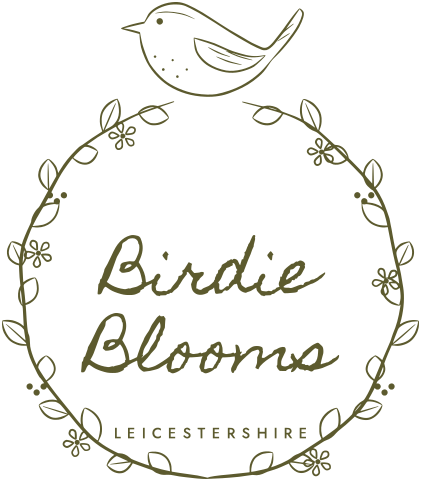
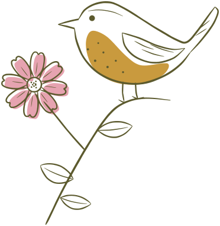
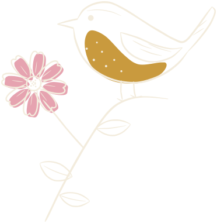
The bird says ‘Birdie’ without spelling it out. The pink and ochre tints sit slightly off the line, like hand-coloured print.
03
Flower Power
A soft, chunky 70s serif with two daisies dotting the i’s. Joyful and confident, and the closest to the daisy in her current logo.
From her picksHer current logo · Bloom Baby · Beyond Buds · Flower Market

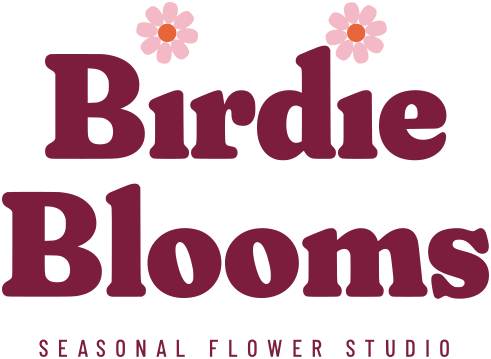
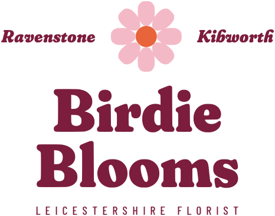
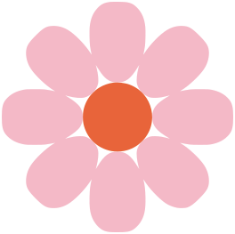

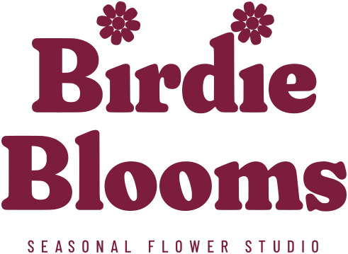
It keeps what people already know about Birdie Blooms, the daisy and the warmth, and makes it bolder and more polished.
04
A Little Bit of Yesterday
A flourished script and an engraved oval with a pansy and her two Bs. Vintage and romantic, straight from her tagline.
From her picksWildora · the violet oval · Le Petit Atelier · La Fleur Verte · Sunlit Studio · the Acne scarf

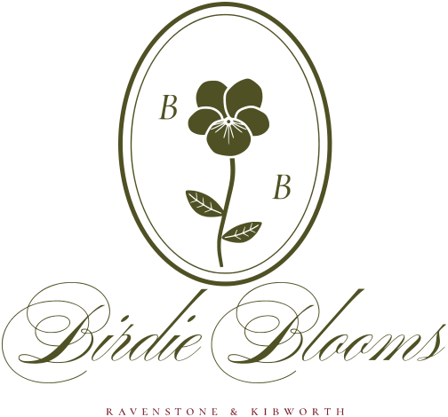
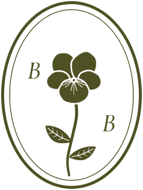
It is the most ‘her tagline’ of the four: old-fashioned in the nicest way, and it looks beautiful stamped, embossed or in gold foil.
Drawn for Birdie Blooms. The fonts are from Google Fonts and free for commercial use. The bird, daisy, pansy and seal were drawn for these logos. Download the logo files from the files page, in their colours and reversed for photos.